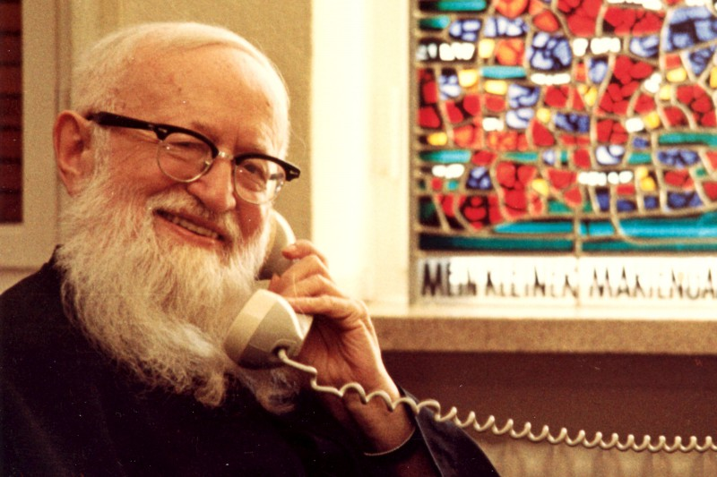

<ion-view title="{{'father_telephone' | translate | capitalize}}">

  <ion-nav-bar class="bar-positive">
                    <ion-nav-buttons side="left">
                     <!-- Toggle left side menu -->
                     <button menu-toggle="left" class="button button-clear button-icon icon ion-navicon"></button>
                    </ion-nav-buttons>

                  </ion-nav-bar>
  <ion-content >
	<div class="list card">

  <div class="item ">

    <h3>{{'father_tells' | translate}}</h3>

  </div>

  <div class="item item-body">
    
    <p>
     {{frase_elegida}}
    </p>

  </div>

  <div class="item ">


    <button class="button button-block button-calm" ng-click="nuevaFrase()">
               <i class="icon ion-ios-refresh-empty"></i>
      {{'another_phrase' | translate}}
            </button>

  <!-- <a class="tab-item" href="#">
      <i class="icon ion-share"></i>
      Compartir
    </a> -->
  </div>
<style type="text/css">
.bar .button.button-fab i, .button.button-fab i {
    font-size: 1.2rem;
    margin-top: 0;
}

.social {
  margin: 10px 0px;
}

</style>

<div class="center social">
   <button class="button button-fab " ng-click="shareViaWhatsapp(frase_elegida)"><i class="fa fa-whatsapp"></i></button>
 <!--<button class="button button-fab" ng-click="shareViaFacebook(frase_elegida)"><i class="fa fa-facebook"></i></button> -->
 <button class="button button-fab" ng-click="shareViaTwitter(frase_elegida)"><i class="fa fa-twitter"></i></button>

</div>
</div>
  </ion-content>
</ion-view>
